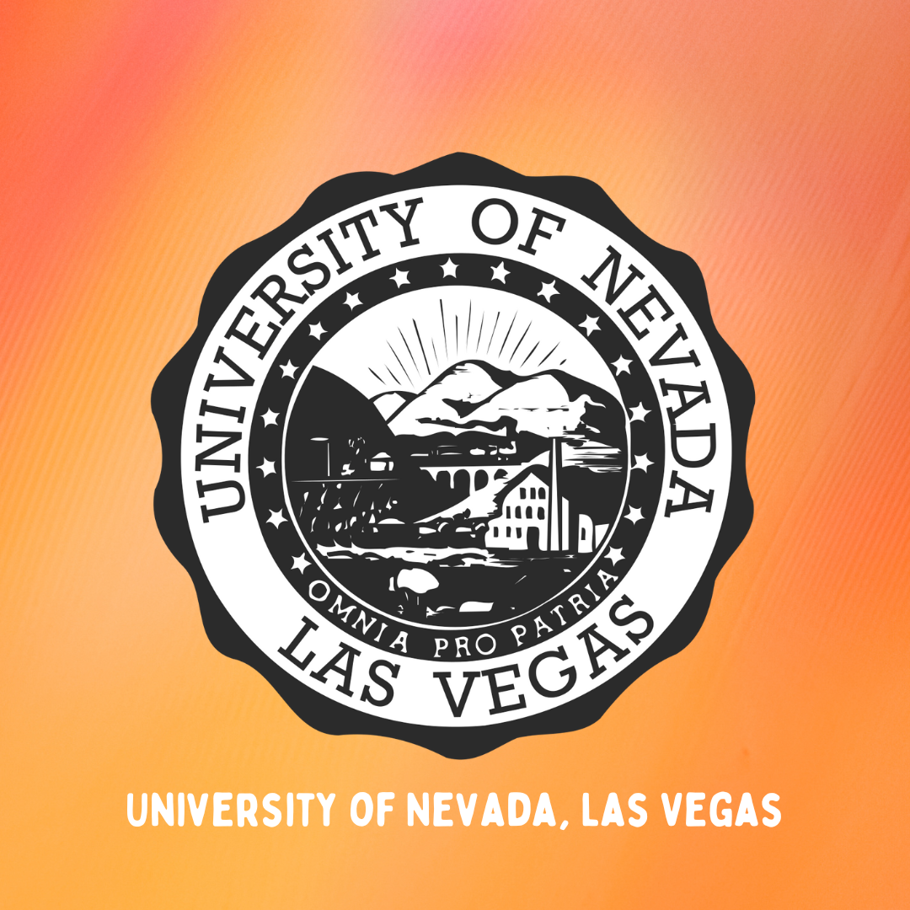
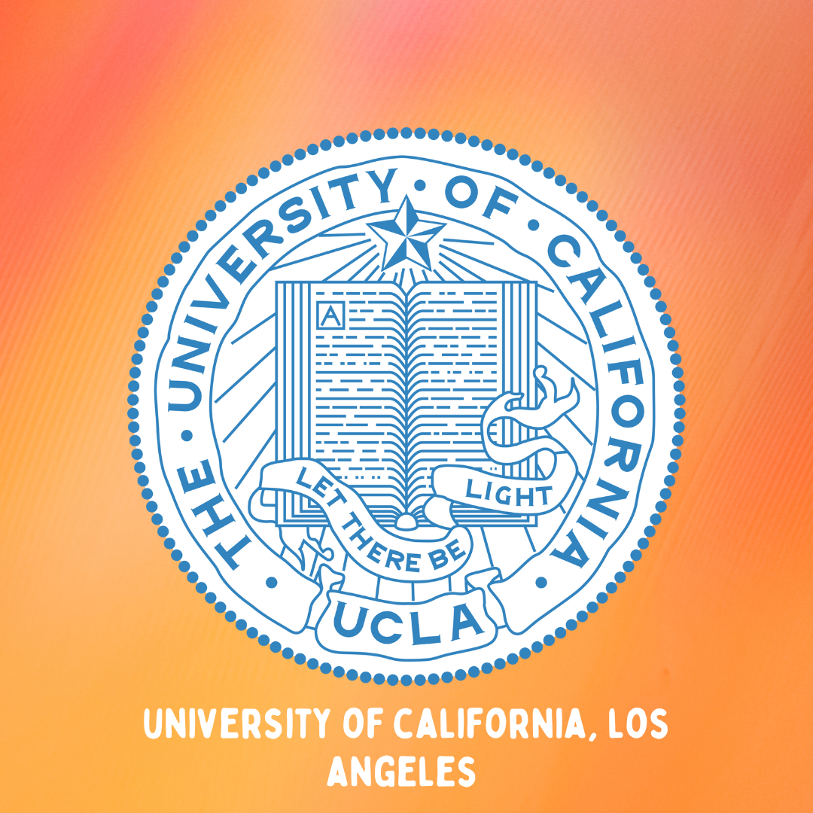
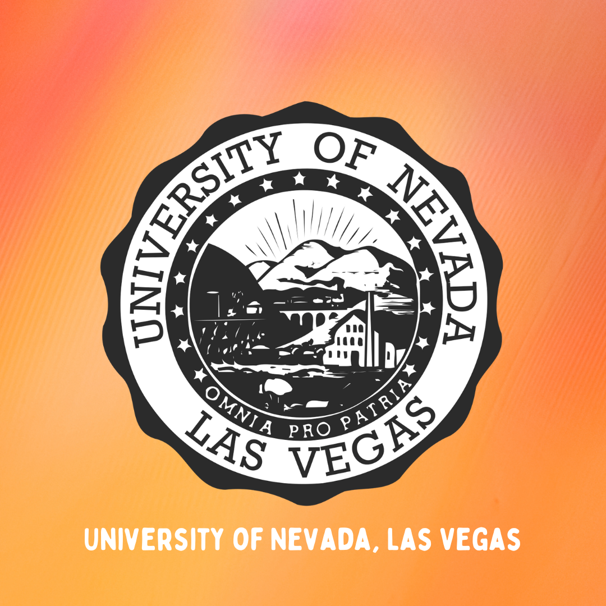
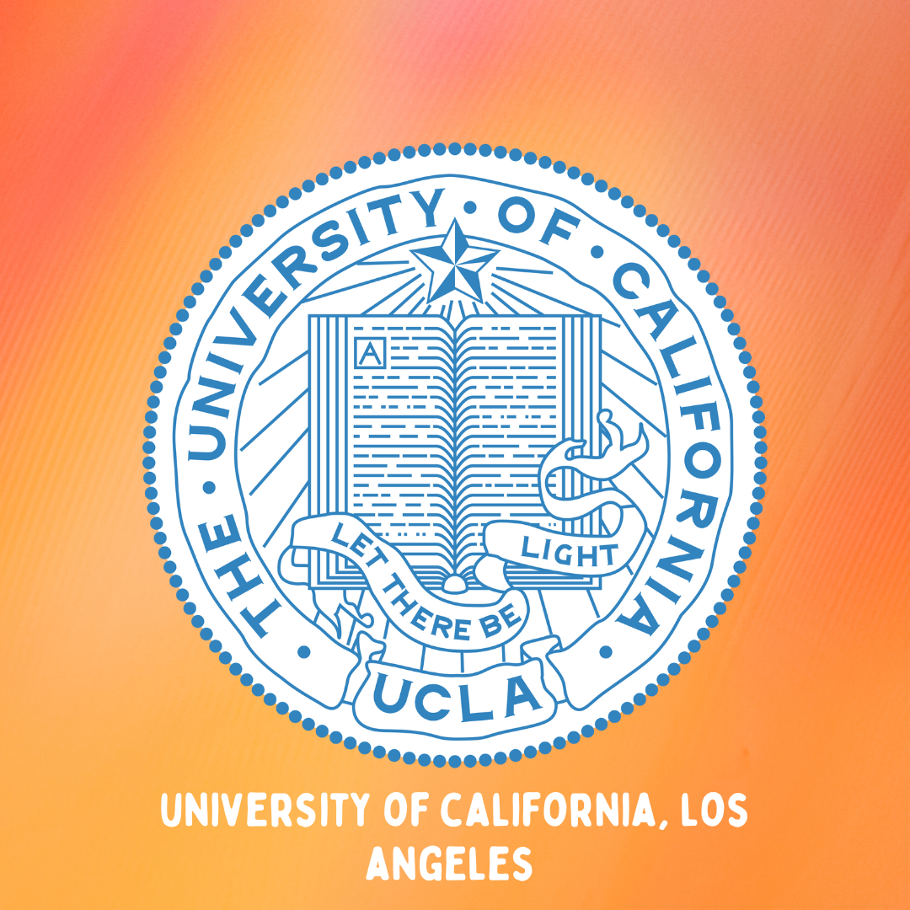

Our Mission
Horizons Mentoring Organization, Guam (Horizonsguam)
Håfa Adai! We are a group of college students from Guam who are interested in giving disadvantaged/under-resourced high school students from home the opportunity to gain a better understanding of applying to and attending institutions off-island. Our goal is to mentor students in one-to-one or group settings with the intention of helping them understand their individual strengths and gain confidence as applicants. Our areas of mentorship include, but are not limited to, personalized advising sessions, college application breakdowns, essay proofreading, and college/university networking opportunities.
We hope that our contributions to the high school population will inspire local students to eventually return home and further enrich our island community with a diverse range of knowledge obtained beyond Guam’s horizon. Let us help you explore past your horizon!
Help on the Horizon for the future of our island
College Advice!
We know how confusing some college applications and FAFSA terminologies are, so here are some clarifications on the terms you need to know! We hope you will have a better understanding of the college applications process!
Sincerely,
Horizons
Our Schools!
 


